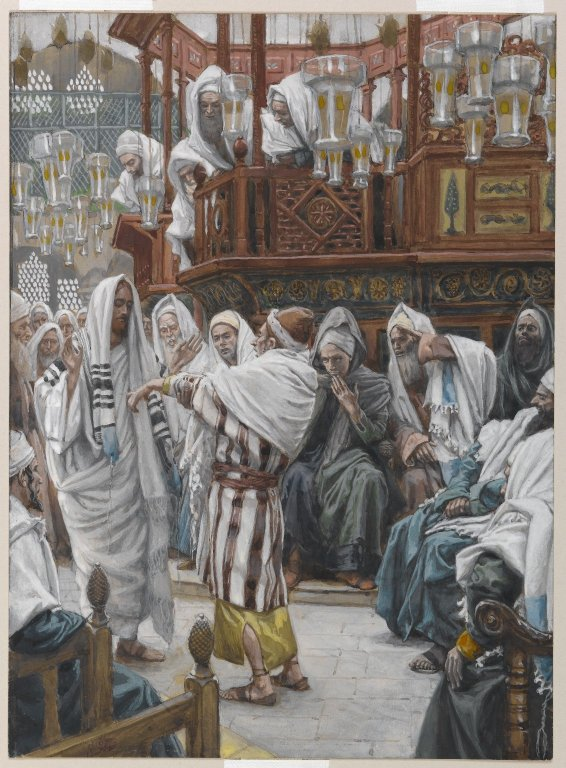

Luke 6 — The Mister Translation

⚠ Tissot fills the synagogue with witnesses — which is exactly what this chapter’s own opponents are. Luke’s text never says the room was crowded, but it does say the scribes and Pharisees ‘were watching him closely to see whether he would heal on the Sabbath, so that they might find a reason to accuse him’ (v7, this translation’s own note on the pattern of Sabbath controversies opening this chapter). Tissot’s rows of onlookers, several already gesturing toward the scene, paint that watching crowd the narration only implies.
_-_James_Tissot_-_overall.jpg){kind=link}
Translator’s Notes — verse by verse
Each note explains this translation’s choice and compares the seven versions on the shelf. Quotations from copyrighted versions (NIV, TLB, NWT) are kept to short phrases for comparison; KJV, Geneva, Douay-Rheims and ASV are public domain.
⚠⚠ “A sabbath” — not “the second-first sabbath.” A large part of the later manuscript tradition inserts deuteroprōtō, “second-first,” a word that appears nowhere else in Greek literature and that copyists themselves seem not to have understood; the earliest witnesses simply read en sabbatō, “on a sabbath.” KJV and Douay both print it, ‘the second sabbath after the first’ / ‘the second-first sabbath’, and so do the older Spanish witnesses, RV 1909’s ‘sábado segundo del primero’ and Geneva’s ‘a second solemn Sabbath’; ASV, NIV, NWT and RV60 all drop the word along with the earliest Greek. No explanation of what it would even mean has won any real agreement — the second sabbath after Passover, the first sabbath of the second month, a copying accident that duplicated an adjacent word have all been proposed — which is itself a sign of a phrase without pedigree.
⭐ Luke names no priest, where Mark names Abiathar. Mark’s parallel has David entering the house of God “in the time of Abiathar the high priest”, where 1 Samuel 21 names Ahimelech, Abiathar’s father, as the priest on duty — Mark 2’s own note lays out both the plain reading of that as an error and the defence that epi can mean “in the passage about” rather than “in the time of,” a sense Mark uses elsewhere (12:26). Matthew (12:3–4) and Luke tell the identical story and name no priest at all either way; that silence does not settle which reading of Mark is right, but it is the earliest evidence there is for how the sentence read to people who had Mark open in front of them.
⭐ “Rubbing them in their hands” — a detail neither Mark nor Matthew has, and the Law’s own word for it. Deuteronomy’s permission to pluck a neighbour’s standing grain by hand — 23:26 on this site’s own Hebrew-following numbering, 23:25 in every English Bible on the shelf — uses melilot, a hapax for the plucked ears, and says nothing about rubbing; Luke alone adds psōchontes tais chersin, the specific action that turns a head of grain into something edible without a millstone. The Douay, translating the Vulgate, has already imported the same gesture into that same verse (‘rub them in thy hand’) — a detail the Hebrew does not have and Luke does.
“Lord of the sabbath,” kept lowercase. This translation follows the same choice already made at Mark 2:28 and Matthew 12:8: kyrios here names an authority Jesus holds over an institution, not a title of address, so it stays “lord” rather than “Lord” — the same distinction that keeps “Lord” capitalized when the crowd or a disciple addresses him by it (5:8) but not here. Most of the shelf capitalizes it as a title; this translation reads it as a description and marks the choice rather than hiding it. ⚠ Mark alone gives the reason — “the sabbath came into being for the human being” (Mark 2:27) — and Luke goes straight from the David argument to the lordship claim without it; Matthew keeps neither the reason nor Luke’s abruptness, inserting the temple-service argument and the Hosea quotation (12:5–7) before reaching the same claim. Mark’s sentence about the sabbath’s own purpose survives in exactly one Gospel, the shortest one.
⭐⭐ “His RIGHT hand” — a detail neither Mark (3:1) nor Matthew (12:9–10) gives. Both older parallels say only “a withered hand”; Luke specifies which one. It is the same graded, almost clinical habit already flagged at the “great fever” of 4:38 and the man “full of leprosy” of 5:12 — whatever its source, a small fact none of the other Gospels troubled to record.
⭐⭐ No anger, no grief — the same pattern already caught running the other way. Mark has Jesus “looking around at them with anger, grieved together with them at the hardening of their heart” (3:5) before he heals; Mark 3’s own note already flagged that Luke keeps the identical participle, periblepsamenos, “looking around,” and drops the emotion attached to it — the same redactional habit already named at 5:12–16, where Luke tells the leper’s cleansing with neither of Mark’s disputed feelings either. One verse later Luke gives the fury back, to the opponents this time: they are filled with anoia (v11), mindless rage. The feeling stays in the story and changes owner.
⚠ “Restored” — without “whole as the other.” A large part of the later tradition adds hygiēs hōs hē allē, “healthy as the other [hand],” matching the same addition already printed in Matthew’s parallel (12:13, ‘restored, healthy like the other’); the earliest witnesses to Luke simply say the hand “was restored.” KJV prints the addition, ‘restored whole as the other’, and Geneva the same words with one more, ‘restored again, as whole as the other’; ASV, NWT, NIV and RV60 all follow the shorter, earlier text.
No Herodians. Mark has the Pharisees go out and immediately take counsel with the Herodians (3:6) — a political detail, since the Herodians backed the ruling dynasty Rome had installed. Luke’s version stays inside the synagogue itself: no exit, no named faction, just a crowd “filled with mindless rage,” talking among themselves about what to do next.
⭐⭐ An all-night vigil before the Twelve are named — Luke’s own addition. Neither Mark (3:13) nor Matthew (10:1–4) has Jesus praying before he chooses the Twelve; both simply have him go up and call them. Dianyktereuōn, a New Testament hapax built from nyx, night, is as strong a word for “spent the whole night” as Greek has. It is the same habit this translation has tracked since 3:21: Luke keeps adding Jesus at prayer at moments his sources do not require it, and a decision this consequential gets the longest vigil the Gospel records.
⭐⭐⭐ “Simon, whom he also named Peter” — the payoff. 5:8’s note already flagged that Luke calls him “Simon Peter” a full chapter before narrating the renaming that would explain the second name. Here is that renaming, plain and unremarked — the shortest sentence in the list, for the disciple whose name this Gospel had already spent early.
⚠⚠ “Judas OF James” — son, or brother? Ioudan Iakōbou supplies no relationship noun at all, the same bare genitive construction as “James of Alphaeus” three words earlier in this same list — where all thirteen versions on both shelves read “son.” Applied to Judas, the shelf splits: ASV and NWT both supply “[the] son of James,” matching the parallel construction; KJV, Douay, Geneva and both Spanish RV 1909 and RV60 all read “brother,” harmonizing with the letter of Jude, which opens by naming its writer “a slave of Jesus Christ and brother of James” (Jude 1:1, already on these pages). This translation reads “son,” on the parallel construction, and marks the alternative rather than picking silently. The encyclopedia entry lays out the further puzzle: Matthew and Mark both call the same man Thaddaeus instead.
⭐ The Cananaean, translated. Kananaios, the word Mark (3:18) and Matthew (10:4) both keep as a transliterated Aramaic title, Luke simply renders into Greek: Zēlōtēn, “the Zealot.” Three names away stands Matthew the tax collector, a man whose former livelihood was collecting Rome’s own revenue — a revolutionary and a collaborator, named in the same short list, with no comment on the pairing at all.
Bartholomew, next to Philip again. All three Synoptic Gospel lists, this one included, name Bartholomew directly after Philip (Matthew 10:3; Mark 3:18) — Acts 1:13’s list alone separates them with Thomas — a pairing old enough, and consistent enough across the Gospels themselves, that the encyclopedia entry lays out the case some readers have made for identifying him with Nathanael, the man Philip brings to Jesus in John 1:45 (already on these pages). Neither name ever appears beside the other on the same page of any Gospel, which is exactly why the question stays open rather than settled.
⚠ A level place, where Matthew has a mountain. Matthew’s sermon opens with Jesus going “up the mountain” and sitting down (5:1); Luke has him come down from the mountain of v12 to stand “on a level place,” topou pedinou — which is why this sermon is conventionally called the Sermon on the Plain against Matthew’s Sermon on the Mount. Whether the two Gospels record one occasion remembered two ways, two different occasions, or a single body of teaching Jesus gave more than once in different settings is a question this translation reports rather than settles; what is certain is only that the two texts, as they stand, disagree about the ground Jesus was standing on.
⭐⭐⭐ “The poor” — not “the poor in spirit.” Matthew’s first beatitude blesses “the poor in spirit” (tō pneumati); Luke’s blesses hoi ptōchoi, unqualified — and where Matthew has eight beatitudes and no woes, Luke has four of each, paired: poor answered by rich, hungry by full, weeping by laughing, hated by well-spoken-of. Both patterns are real, attested exactly as printed, and the disagreement is not a copying accident in either text; it is presented here as two records of Jesus’s teaching that a reader is free to weigh, not as a problem this translation can resolve by choosing one as original.
⭐ “Received your comfort in full” — a commercial receipt. Apechete, from apechō, is the verb Greek commercial papyri wrote on a paid invoice: nothing further owing. The rich have already been paid what they were owed, in full, with nothing more to come — the same accounting language this translation has already tracked at Philippians 4:18 and Matthew 6:2’s hypocrites, who “have their reward in full.” NWT keeps the commercial force, ‘having your consolation in full’; NIV and ASV both soften it to ‘have already received’/‘have received your consolation,’ without the receipt.
“Happy,” verbless again — and the same shift into “you” that Matthew makes too. Makarios is the same word Matthew 5 uses nine times across its eight beatitudes; this translation reads it “Happy” here as there, with the NWT, rather than the King James “Blessed.” Matthew 5’s own note already flagged that “Happy the poor” is a verbless pronouncement in Greek, not a sentence, and that Matthew switches to an explicit “Happy are you” only at its ninth, second-person beatitude (5:11) — and predicted that “Luke’s parallel (6:20) has flatly ‘Happy the poor.’” Luke does exactly that, keeping vv20–21 verbless (with a second-person yours/you will only in the reason clause) and making the identical switch to este, “you are,” at its own persecution beatitude, v22 — the fourth and last, where Matthew’s eighth and last makes the same move.
⚠ The other half of a harmonization already caught. Matthew 5’s own note already flagged that the King James’s long form of Matthew 5:44 — “bless them that curse you, do good to them that hate you… despitefully use you” — entered Matthew’s later manuscripts from these two verses by scribal harmonizing; the earliest witnesses to Matthew keep a shorter, harder sentence. This is the passage the extra words came from: Luke’s own four imperatives, love, do good, bless, pray, stand here without any textual dispute.
The Golden Rule, mid-argument — not the capstone it is in Matthew. Matthew places the identical rule at the close of the whole Sermon, sealed with “this is the Law and the Prophets” (Matthew 7:12). Luke drops it into the middle of the enemy-love argument, with no such seal, as one more instance of the reciprocity Jesus has just been overturning — not the summary of everything, here, but a single move inside a larger one.
⚠⚠ “Expecting nothing back” — or “never despairing”? Apelpizontes, from elpizō, to hope, with the negating prefix apo-, ordinarily means to despair, to give up hope entirely — which is how ASV alone on this shelf reads it, ‘never despairing’: keep lending even to a debtor everyone else has given up on. Every other witness reads it contextually instead, against Hellenistic commercial usage where the same verb can mean despairing specifically of repayment: KJV ‘hoping for nothing again’, Geneva ‘looking for nothing again’, Douay ‘hoping for nothing thereby’, NWT ‘not hoping for anything back’, NIV ‘without expecting to get anything back’, both Spanish RV 1909 and RV60 ‘no esperando de ello nada’. This translation follows the majority contextual reading, with the verb’s plainer sense kept here rather than hidden.
“Become merciful” — a process, not a state. Ginesthe is the present imperative of ginomai, to become, come to be — not the verb “to be” (este) most of the shelf’s “be ye merciful” implies. NWT alone keeps the ongoing sense in English, ‘continue becoming merciful’; the measure set is not a fixed target but the Father’s own continuing mercy, always already ahead of it.
⭐⭐ “Release” — and the NWT’s own 1984 and 2013 editions disagree with each other about it. Apolyete, from apolyō, to release or set free — the verb of a prisoner Pilate “decided to release” (Acts 3:13, already on these pages) or a marriage dissolved (Matthew 19:7, already on these pages) — sits where a reader expects “forgive.” Nearly every version on the shelf translates it that way: KJV, ASV, Douay, Geneva and NIV all read ‘forgive.’ NWT 1984 alone keeps the literal verb, ‘keep on releasing, and you will be released’ — and its own 2013 revision then abandons that exactness for ‘keep on forgiving, and you will be forgiven,’ matching everyone else. This translation follows the 1984 reading: a release, not merely a pardon, closer to letting a debtor or a prisoner go than to feeling differently about them.
⭐⭐ The splinter and the beam — the identical words as the other Sermon. To karphos… tēn de dokon, verses 41–42, match Matthew 7:3–5’s wording almost exactly, down to the single word hypokrita, “hypocrite.” Whether that closeness comes from a shared written source, one Gospel’s use of the other, or two records of language memorable enough to survive unchanged, this translation reports the identity of the wording and does not adjudicate the cause.
“Known BY its own fruit” — a description, not a test. Matthew’s version of this image is framed as a method of detection: “from their fruits you will recognize them” (7:16, 20), bracketing a warning about false prophets on both sides. Luke keeps no such frame here: the tree simply is known by its fruit, stated as a fact about trees and, by the parable’s own logic, about the heart the next sentence turns to — a general truth rather than a test handed to the listener for use against someone else.
A disciple, a teacher, and a tree, no stated connection. Verses 39–40’s parable of the blind guide and the trained disciple opens this run of sayings, ahead of the eye-splinter image and the tree image, with no stated connective joining any of the three; they share only their common target, the person who corrects others before correcting himself — a hearer led by an unqualified teacher, a critic blind to his own beam, words that betray what actually fills the speaker’s heart.
“Lord, Lord” — capitalized, against v5’s “lord of the sabbath.” The same Greek word, kyrios, appears three times in this chapter — once at v5, twice together here — with two different capitalizations in this translation: lowercase at v5, where it describes an authority Jesus holds; capitalized here, where the doubled address (“Lord, Lord,” a single speaker repeating the title for emphasis) is directed at him. The distinction is explained in full at v5’s note; this is the second half of it, applied.
⭐⭐ A foundation DUG, not simply a house on rock — and a river, not a storm. Matthew’s parallel names three separate hazards battering both houses — rain, rivers, and wind (7:25, 27) — and its contrast is where each house was built, rock or sand. Luke’s wise builder dug and went deep (eskapsen kai ebathynen) before laying the foundation on the rock, active labor rather than a location chosen; and the single hazard is a flooding river, ho potamos, bursting against the house — the image of a Palestinian wadi, dry most of the year and suddenly violent, rather than Matthew’s more general storm. Both parables reach an identical verdict by two different pictures of what building well actually requires.
⚠ No closing crowd. Matthew’s Sermon ends with the crowds “astounded at his teaching” (Matthew 7:28–29). Luke’s sermon simply stops, on the ruin of the second house, with no reaction recorded at all; the crowd’s response, if this Gospel gives one, belongs to whatever the next chapter does with it.
Patterns worth carrying forward
Where this translation keeps the words exact / distinct: lord lowercase for the sabbath-authority sense of kyrios, kept apart from capitalized Lord in direct address; right hand, a detail unique to Luke among the three Sabbath-healing accounts; mindless rage for anoia; Happy for makarios, matching Matthew 5; received your comfort in full for apechete, the commercial-receipt verb; Release for apolyō, following the NWT 1984’s own literal choice against its 2013 revision; Become merciful for the process verb ginesthe; and splinter / beam, kept identical to Matthew 7’s wording for the words Luke and Matthew share verbatim.
Echoes paid. The double name “Simon Peter,” used early at 5:8 before its explanation, is finally explained: “Simon, whom he also named Peter” (v14). Luke’s habit of adding Jesus at prayer where his sources do not require it (3:21; 5:16) returns at its longest yet, a whole night (v12). And the pattern already caught of Luke keeping Mark’s narrative details while dropping Mark’s stated emotions, first flagged at the leper of 5:12–16, recurs at the withered hand (vv8–10) — with the missing fury handed instead to the opponents four words later.
Echoes planted. The Twelve named here will scatter through the rest of Luke and into Acts, most by name only once each; the Zealot and the tax collector, standing three names apart in this list, are a pairing this Gospel never comments on again but never needs to. The four woes answering the four blessings set a pattern — reversal, not merely comfort — that recurs at the rich man and Lazarus (16:19–31) and the Magnificat already sung at 1:52–53. And the river bursting against two houses (vv48–49) is the last image before the centurion’s servant, healed at a word spoken from a distance.
Next in sequence: Luke 7 — a centurion’s faith praised above any found in Israel, a widow’s son raised at the gate of Nain, and John the Baptist’s own doubt from prison, answered.